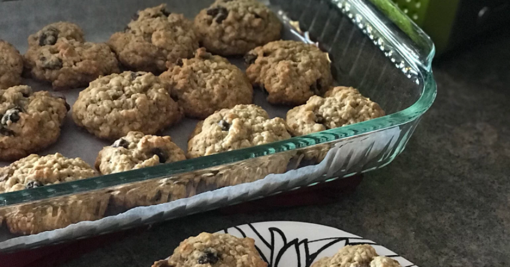

Return to Home
Oatmeal Raisin Cookies! 🍪

Description
An old stand-by that the whole family loves. Healthy AND tasty!
Ingredients:
- ¾ cup of butter, softened
- ¾ cup of white sugar
- ¾ cup of packed light brown sugar
- 2 eggs
- 1 teaspoon of vanilla extract
- 1 ¼ cups of all-purpose flour
- 1 teaspoon of baking soda
- ¾ teaspoon of ground cinnamon
- ½ teaspoon of salt
- 2 ¾ cups of rolled oats
- 1 cup raisins
Food Preperation Steps:
- Preheat oven to 375 degrees F (190 degrees C).
- In large bowl, cream together butter, white sugar, and brown sugar until smooth.
- Beat in the eggs and vanilla until fluffy.
- Stir together flour, baking soda, cinnamon, and salt.
- Gradually beat into butter mixture.
- Stir in oats and raisins.
- Drop by teaspoonfuls onto ungreased cookie sheets.
- Bake 8 to 10 minutes in the preheated oven, or until golden brown.
- Cool slightly, remove from sheet to wire rack.
- Cool completely.
Congratulations, you're done! Enjoy your cookies!
Nutrition Facts
Per Serving:
- 92 calories
- 1.3 grams of protein
- 14.6 grams of carbohydrates
- 3.4 grams of fat
- 15.4 milligrams of cholesterol
- 75.4 milligrams of sodium
Source Page Start Home